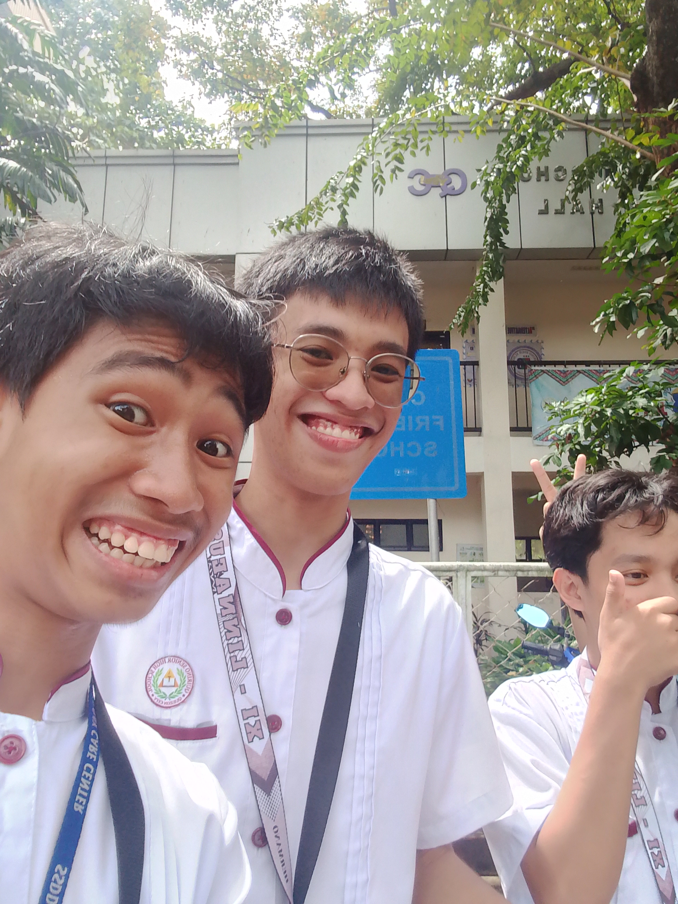

I always dream about building the perfect collection—one that captures my passion for cars and tells a story through every model. My collection is something I’ve been building over the years with passion and patience. I started collecting when I bought my first classic vehicle, a 1967 Ford Mustang. That moment sparked a lifelong interest in automotive history and engineering. Each piece in the collection tells a different story. Some represent innovation, while others showcase design excellence. It features both vintage classics and modern supercars. There are American muscle cars, European sports cars, and even a few rare imports. Every item is carefully maintained and regularly serviced.I don’t just collect for show—I enjoy driving them too. Taking one out for a weekend cruise is one of my favorite ways to relax. Some vehicles were hard to find and took years to locate. I once flew across the country just to see a rare model in person. Auctions, private sales, and online platforms have all contributed to the journey. Along the way, I’ve met many fellow enthusiasts. The best part of collecting is the connection to car culture. Each model has its own history and personality. I keep detailed records on every piece—its specs, restoration history, and previous owners. The focus isn’t on quantity, but quality. Uniqueness and condition are key. Some items are limited-edition models. Others are iconic vehicles from specific eras. Everything is stored in a climate-controlled garage.
Friends and family love visiting and seeing them up close. Occasionally, I lend them to shows and exhibitions. Watching others appreciate the collection is rewarding. I'm constantly learning new things about design and mechanics. From engine tuning to bodywork restoration, every aspect fascinates me. The collection continues to grow, slowly but meaningfully. I'm always on the lookout for the next great addition. These machines are more than just vehicles—they're pieces of art. The entire collection is a reflection of my passion and dedication. One day, I hope to pass it down to someone who shares the same love.
See other pictures
Back